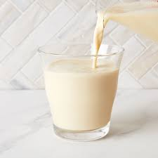

SOY MILK RECIPE

DESCRIPTION
Soymilk is a traditional vegetable protein beverage, which is made from whole soybeans. It is originated in China and is now becoming more and more popular in the diets around the world. As it is named “soymilk,” its protein content is close to that of cow's milk.
INGREDIENTS TO MAKE YOUR SOY MILK AT HOME:
- 1/2 cup of soybeans
- 2-3 cups water for soaking
- 4 cups water for blending
- Sugar to taste or any sweetner (optional)
STEP-BY-STEP INSTRUCTIONS FOR HOME-MADE SOY MILK:
Here is an easy to follow step of how to make soy milk at home:
- First, Rinse, drain, and soak beans in water for 8 to 10 hours.
- Transfer your soaked beans to a blender or food processor along with 1 cup of water.
- After blending, strain the mixture into a pot using a double layer of cheesecloth or a fine sieve.
- Add pandan leaf or ginger, and sugar to taste.
- Boil the soy milk for minutes
- Serve chill or warm
- Enjoy!!!!
NOTE
Soy milk should be boiled because raw soy milk contains harmful substances, like saponin, trypsin inhibitor, etc.. Drinking undercooked soy milk can cause nausea, vomiting, cramps, and diarrhea.